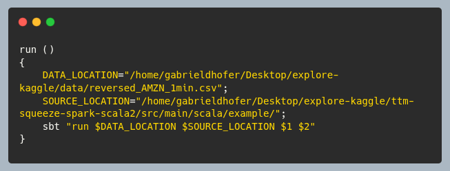
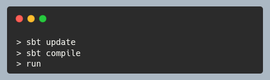
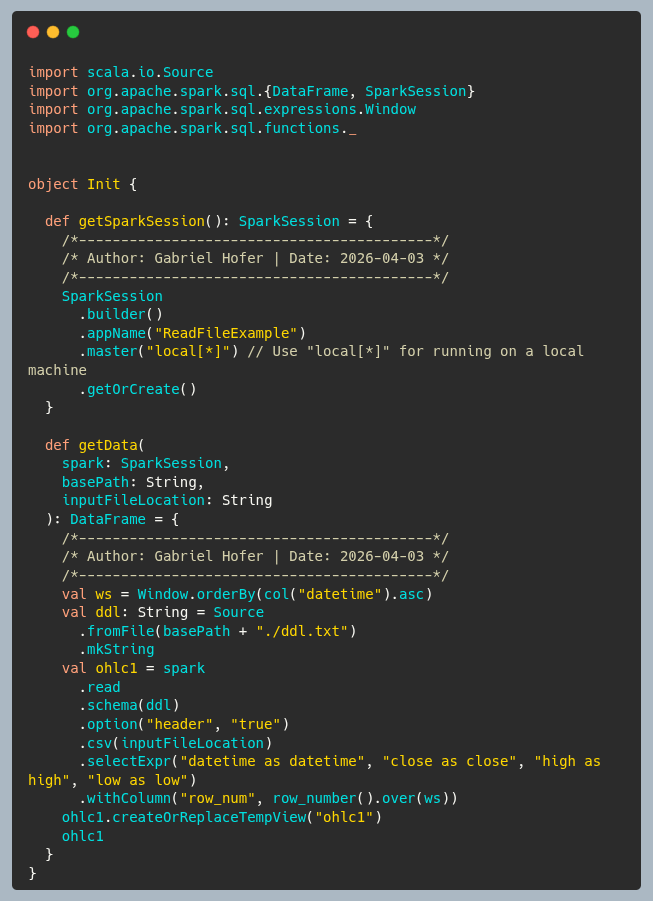

Implementing Gradient Descent with SQL
While languages such as Python is a popular choice for implementing and training ML models,
we attempt to implement gradient descent in SQL (postgresql), because it could be fun an interesting.
How to install and start the postgres CLI:

Create table and specify the primary key - necessary:
Load data into the main table:
Select last 20 records from the table and insert into temp table:
How to Loop in postgreSQL:
Defining a UDF in postgreSQL for the model function:
A Backtesting System with Apache Spark
- Architecture
- Usage
- Main
1. Architecture Overview
1. The main program calls benchmark.
2. The benchmark function creates backtest "batches".
3. The backtest function selects a random slice from the historical data.
4. Then backtest calls a strategy method to compute when the user should BUY/SELL.
5. Finally, backtest calculates returns and excess returns based on those BUYs/SELLs.
2. Command Line Parameters & Usage
Here's a great online guide to SBT:
SBT Book
2.1 Parameters
- BatchCount: number of samples
- BatchSize: length of sample slice

2.2 Compiling and running

3. Main
Entry point for the program. It does the following things:
- parses command line arguments
- creates the Spark Session
- loads data into main
Code

4. Init
- Create SparkSession and load data from file.
- Load the DDL (schema) from file and store as a string.
- The Spark Window object allows us to add a row number column to the dataframe.
- The OHLC data is loaded by also passing the DDL as the
schema option.
Code

5. Benchmark
This function simply repeats a call to
backtest.
batchCount is the number of times that
backtest will get invoked.
Code

6. Sampling
This randomly samples a slice of price data from the entire file.
The random seed is set with the time in nanoseconds.
Code

7. Backtest
Calls the strategy on the sample data. Then calculates returns.
Here are the common table expression steps in calcReturns:
-
expr0 ⟶
Adds prevOrderAction.
Only return records where orderAction changes from previous record
-
expr1⟶
Adds closeLag
-
expr2⟶
Adds row_num2 and closeRtn.
Resets row numbers since we filtered in expr0
orderAction must be false - because returns are calculated when positions are closed.
-
expr3⟶
Adds excessRtn
-
select expression
Code

8. TTM Squeeze Indicator Strategy
9. Sharpe & Calmar
- https://en.wikipedia.org/wiki/Sharpe_ratio
- https://en.wikipedia.org/wiki/Calmar_ratio
Future Project: Building a Database
Author: Gabriel Hofer
Date: 2026-04-10
Goals:
- To have fun learning about databases
- To understand databases internals
- To implement clustered indexes with B+ trees and possible other structures
- Implementation should read and write data files and index files.
- To understand and implement query planning
- To understand and implement Atomicity, Consistency, Isolation, Durability
- Implement logical sharding (since we are developing on a single machine)
- Implement Locking:
a. row-level, page-level, table-level
b. s-lock, x-lock, u-lock
Coding Standards:
- Implementation should be in Scala 3, built with SBT
- Only Immutable types: Vector, List, Set, Map, Range
- No for loops, only folds, reduce, and other strictly functional constructs
- The data should always exist in a tree (B+), with a unique key
More Goals:
- Implement method to print the B+ tree, formatted
- Understand how index framentation happens and how to remediate it
- Explore B+ tree alternatives
- Create a "service" - to connect to the database via JDBC
- Understand how column order in the index affects performance
- Learn about covering an index in a query and why it matters
- Database pages: page-id, heap files, tree files, page headers, page layout schemes,
- Think about how to add concurrency features with Scala actors
Online Resources: